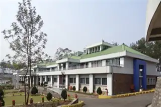
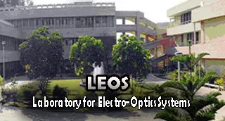

Latest News
ISRO Supports a space start-up's Rocket Engine Test
Commencement of Harbor Trials for the Gaganyaan Recovery operations
Gaganyaan Mission: Successful Hot Test of Service Module Propulsion System
NRSC/ISRO honoured with ESRI SAG Award 2023 for Outstanding Application of GIS Technology in Landslide Inventory
NRSC/ISRO honoured with ESRI SAG Award 2023 for Outstanding Application of GIS Technology in Landslide Inventory
ISRO Unveils Vital Facilities for Solid Motor Advanced
First hot test of the Semi-cryogenic engine conducted at IPRC, Mahendragip
Norway explores Space Collaboration with ISRO
CNES and ISRO Foster Collaboration and Innovation in Space Arena
CEO of Arianespace called upon Chairman, ISRO
Scientists Discover an extreme Massive Giant and Most Dense Exoplanet
ISRO and the Indian Navy firm up the Crew Recovery Training Plan for Gaganyaan Mission
Amateur astronomers in ISRO capture rare celestial event with minimal equipment
Visit of President of the International Astronautical Federation (IAF)
Young Scientists Programme YUVIKA–2023 inaugurated by Chairman ISRO / Secretary
Qualification of Crew Module Propulsion System for Gaganyaan Programme completed
Tests commenced on Semicryogenic engine at IPRC, Mahendra
National Workshop on “Earth Observations for Climate Services” held at the University of Kashmir
Centre for Space Science and Technology Inaugurated at IIT Roorke
ISRO Offers Space science and Technology AwaReness Training (START) for the Post-Graduate and Final Year Undergraduate Students
NRSC/ISRO announces short courses on Remote Sensing Data Acquisition and Processing
Post Mission Disposal of GSAT-12
ISRO and MVA collaborate for the outreach of the Chandrayaan-3 Mission
One-day visit of IFS Officer Trainees
Successful completion of System Demonstration Model (SDM) tests for Crew Module Propulsion System for the Gaganyaan Programme
Successful completion of human rated Vikas engine test campaign for the L110 stage of Gaganyaan programme
Chandrayaan-3 Data Analysis Workshop for National Academia and Institutes
Indian Space Situational Assessment for the year 2022 – Highlights
Announcement of Opportunity (AO Cycle 13) soliciting proposals for AstroSat observatory time
Rozgar Mela: 330+ Appointment Orders issued till December 2022
Highlights
Autonomous bodies

PRL

NARL

NESAC

IIST
ISRO Centres & Units

HSFC

IIRS

VSSC
IPRC

LEOS

LPSC

MCF
IN-SPACe NSIL

IN-SPACe